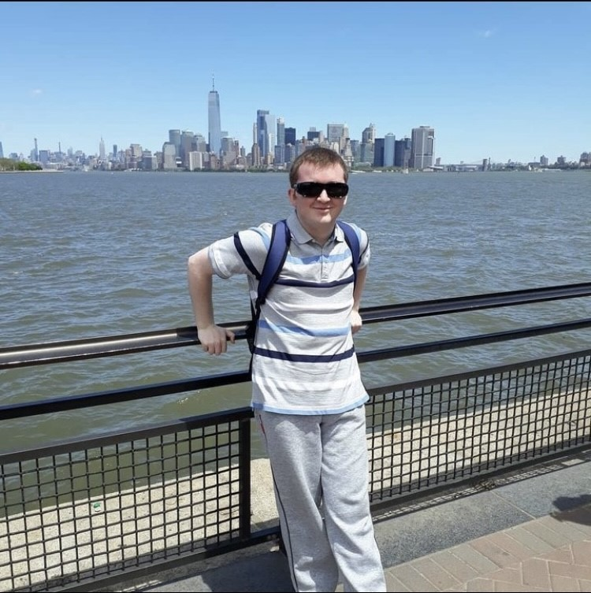

HOME
Hello, and welcome to my personal website.
My name is Lee Gallagher. I have been studying the art of web development for about 5 years now, and have been a strong enthusiast of technology, the internet and content creation well before that. My journey began in 2020, when during the Covid pandemic and lockdown, I discovered introductory courses on HTML and CSS online and started to learn the beginner-level concepts of web design & development as a way to pass the time after (and often times, before) my work, which I was still doing at the time.
Since then, I have developed multiple websites using HTML, CSS and JavaScript, as well as sampling some WordPress and PHP as well. Eventually my interests became more serious and so for about a year and a half (as of December 2025) I have been attending Ayrshire College in Kilwinning, where in one year I spent one semester in both their Level 4 and Level 5 Computing courses, which has led me to now study the NC Level 6 Computing course at the moment. I hope to continue this journey by studying the HNC and HND courses in Computer Science and ultimately would like to study Computer Science at university level.
I am eager to get some hands-on experience in multiple domains of the computer science subject, including web development, software development including web and mobile apps, embedded systems (electronics) and AI uses and applications. I like to think my interests in the subject are both broad and deep - I have a lot of interest in all areas.
In my spare time, when I'm not studying or (doing real) working, I enjoy working on my YouTube channels, including a channel dedicated to my other big passion (aviation & plane-spotting) as well as a gaming channel, which is a younger effort but one that I hope to make successful with not just YouTube videos but YouTube and TikTok streams in the future.